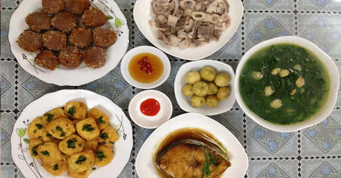

Với gợi ý thực đơn hàng ngày đủ cho một tháng dưới đây, gia đình bạn sẽ có những bữa cơm thật ngon miệng với những món ăn đầy đủ chất dinh dưỡng, giúp bạn tiết kiệm tối đa thời gian nấu nướng mà không phải vắt óc nghĩ xem tối nay ăn gì. Bởi vì đây đều là danh sách các món ăn hàng ngày dễ làm, nguyên liệu dễ mua, lại vô cùng ngon miệng, đưa cơm. Hãy cùng PasGo Team chúng mình vào bếp ngay nhé!
Thực đơn các món ăn hàng ngày dưới đây được mẹ Thu Hằng chia sẻ trên trang cá nhân của mẹ ấy, ban đầu chỉ là để giúp mẹ ấy lưu lại các món ăn hàng ngày của chính gia đình mình, để mỗi lần xem lại, không phải vắt óc nghĩ xem tối nay ăn gì nữa, nhưng không ngờ bài viết đã nhận được rất nhiều sự quan tâm của mọi người, đặc biệt là các mẹ nội trợ, bỉm sữa. PasGo Team đã tổng hợp, biên tập & chia sẻ lại để các bạn tham khảo. Chúng ta hãy cùng vào bếp và nấu những bữa cơm thật ngon, thật riêng, thật mới mẻ cho cả gia đình mình nào!
Cách làm đậu phụ rán tẩm hành đơn giản vô cùng mà lại quá ngon. Chỉ đổi cách thức chế biến một chút cho cách rán đậu thông thường là bạn đã có một món ngon mới lạ cho cả gia đình rồi. Hãy thử làm ngay cùng PasGo Team nhé!
Đừng quên PasGo là giải pháp đặt bàn Nhà hàng kèm ưu đãi trực tuyến, với cộng đồng hơn 2000 Nhà hàng thương hiệu lớn nhỏ khắp Hà Nội, Sài Gòn, Nha Trang, Đà Nẵng,... nha!
Đậu tẩm hành là một món ăn dễ làm từ khâu mua nguyên liệu đến cách chế biến. Tổng thời gian thực hiện chỉ khoảng 15-20 phút đậu phụ rửa qua nước cho sạch bụi, sau đó cắt miếng vừa ăn, đặt lên khăn thấm nước để khi rán đậu không bị bắn dầu.

Đừng quên PasGo là giải pháp đặt bàn Nhà hàng kèm ưu đãi trực tuyến, với cộng đồng hơn 2000 Nhà hàng thương hiệu lớn nhỏ khắp Hà Nội, Sài Gòn, Nha Trang, Đà Nẵng,... nha!
Còn nếu bất chợt một ngày nào đó bạn thấy nấu nướng mệt mỏi quá, thì đừng lo, chỉ cần nhớ rằng luôn có PasGo ở đây chờ nhé :). PasGo là gỉải pháp đặt bàn Nhà hàng trực tuyến, với hơn 2000 đối tác Nhà hàng thương hiệu lớn nhỏ tại Sài Gòn, Hà Nội, Đà Nẵng, Nha Trang,... Trên PasGo luôn sẵn có hơn 10.000 ưu đãi giảm giá mỗi ngày, mức giảm có thể lên tới 50%, đang chờ đón bạn.